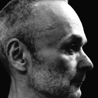

Alexander Belyshkin
Psychologist, methodologist
People don’t see what they actually do without a useful feedback loop. Since 1997 I have been learning to build such loops, and helping others build them.
I started in a university lab, built them for companies for twenty years, then for myself. Now I make tools that give anyone one.
1997–2001In the lab
What happens when work is interrupted
At the work psychology laboratory of the Moscow State University psychology faculty we studied people at their computers.
Someone would be editing a file in Word, and we would interrupt them: look up a word in a paper dictionary, find a number in a phone book. Then we watched how they got back to the task and which strategies they used.
We could see the strategies. The people using them mostly could not. The study is written up with Ivan Burmistrov in How interruptions affect people working at a PC (in Russian).
2001–2023For companies
Showing companies what their users do
In the lab, what we saw went into papers. The people who could act on it were the ones building software.
So in 2001 I founded Usethics, the first Russian company that did nothing but usability research, and ran it for about twenty years. We watched real people use real products and brought back what we saw: about 2,000 projects for Russian and international clients. Usethics stopped work in 2023.
I described the field in Usability in Russia, a chapter in Global Usability (Springer, 2011).
2023–2026For myself
No clients
After 2023 there were no clients, so there was no one to show anything to. I turned the same method on myself: do something, keep a record, look at the record.
I read about 52 books a year. What I take from them goes to aka mulator, a Telegram channel of quotes. The questions they leave go to Question of the Day, a second channel. Philosophical texts in plain English go to the subreddit English but Simple.
I recorded myself reading Gogol’s The Government Inspector as a radio play, to hear my own voice. And a photo project kept a record of how I looked and what I was thinking, in a dream.
In 2026 I took a new job as a methodologist.
2025–2026For anyone
Tools that show it without me
Watching myself, I found that feedback works best when it is instant and exact. Nobody can sit beside you for that, so it takes an instrument. I built two, and anyone can use them.
Play of Time is a stopwatch you try to stop at exactly three seconds. Every attempt tells you how precise you were, whether you are rushing or holding back, and your lucky index: how often you hit, divided by how often pure chance would.
Press Start, count three seconds in your head, press Stop.
Read Aloud listens while you read an English book aloud. Each word turns green or red as you say it. Afterwards you see how many words came out right, which ones did not, and whether you sound American or British.
NowFor you
What kind of feedback would you like to get?
Write to me and let’s discuss it: alexandr.belyshkin@gmail.com
1997–2011What I wrote
Along the way I wrote about what we saw. Three pieces are translated in full on this site, with PDFs; the rest are in Russian unless noted.
- 1997How different kinds of users picture their work with a computerGraduate research, Moscow State University.
- 1997Third European Summer School on New Information Technology and Work PsychologyPsychological Journal, October 1997. Source to be added.
- 2000User’ Categories and Perceptual Difference of a Related Computer TasksVestnik Moskovskogo Universiteta, No. 3. Source to be added.
- 2001Psychological Support of Work Safety and Labor ProtectionWith A. Kuznetsova, M. Kapitsa, I. Blinnikova, I. Burmistrov and K. Firsov. In Error Prevention and Well-Being at Work in Western Europe and Russia, eds. V. De Keyser and A. Leonova. Kluwer, pp. 177–203. In English.
- 2002Testing interfacesWith Alexey Lukutin. PC Week, No. 2 (320). Translated, with a PDF.
- 2003Interface design as part of writing the requirements specificationWith Vlad Golovach. Translated, with a PDF.
- 2004The user is always rightEduard Proydakov’s interview with Rolf Molich for PC Week; I took part.
- 2011Usability in RussiaIn Global Usability, eds. Ian Douglas and Zhengjie Liu. Springer, pp. 273–284. In English.
- 2011A user interface checklistWith Vlad Golovach. Translated, with a PDF.
On the Usethics blog
- Four times inadequate: typical interface problems of Russian software and how to prevent them
- How interruptions affect people working at a PCWith Ivan Burmistrov.
- Comparative usability testing of products that differ in functional power
- A new life for the scrollbarWith Ekaterina Filatova and Ivan Boyko.